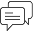

<div class="p15">
  <div class="hesdingWithBtn">
    <div class="leftAlignTitle">Top Astrologers</div>
    <a class="viewAll" routerLink="/all-astrologers">View All</a>
  </div>
  <div id="container">
    <swiper-container slides-per-view="2.5" space-between="15" pagination="false" autoplay-delay="99000"
      space-between="15" breakpoints='{
        "320":  { "slidesPerView": 2.3 },
        "640":  { "slidesPerView": 2.2 },
        "1024": { "slidesPerView": 2.5 }
      }'>

      <swiper-slide *ngFor="let astro of topAstrologers">
        <div class="topAstroBox" [routerLink]="['/astroprofile', astro.id]">

          <!-- Top-left dot: green = at least one service online, grey = offline -->
          <span class="topAstroBoxactive"
            [class.online]="astro.is_chat_online || astro.is_call_online"
            [class.offline]="!astro.is_chat_online && !astro.is_call_online">
          </span>

          <div class="topAstroBoxImg">
            
          </div>

          <div class="astroDetails">
            <div class="topAstroName">{{ astro.display_name }}</div>

            <div class="astroLang">
              <span *ngFor="let lang of astro.languages; let last = last">
                 <span>{{ lang.name }}</span> <span *ngIf="!last">, </span>
              </span>
            </div>

            <div class="totalExp">Exp. : <strong>{{ astro.experience_years }} Yrs</strong></div>

            <div class="astroCallorChatbtn">

              <!-- CHAT BUTTON -->
              <a class="astrochaybtn"
                [class.btn-online]="astro.is_chat_online"
                [class.btn-offline]="!astro.is_chat_online"
                (click)="openChat($event, astro)">
                
                <span>{{ astro.chat_price | number:'1.0-0' }}/Min</span>
                <!-- <span class="status-dot"
                  [class.dot-green]="astro.is_chat_online"
                  [class.dot-grey]="!astro.is_chat_online">
                </span> -->
              </a>

              <!-- CALL BUTTON -->
              <a class="astrochaybtn"
                [class.btn-online]="astro.is_call_online"
                [class.btn-offline]="!astro.is_call_online"
                (click)="openCall($event, astro)">
                
                <span>{{ astro.call_price | number:'1.0-0' }}/Min</span>
                <!-- <span class="status-dot"
                  [class.dot-green]="astro.is_call_online"
                  [class.dot-grey]="!astro.is_call_online">
                </span> -->
              </a>

            </div>
          </div>
        </div>
      </swiper-slide>

    </swiper-container>
  </div>
</div>


